研岸是什麼
研岸是台灣研究所考古題的練習網站。每份考卷都拆成一題一題，你可以逐題作答、把思路存下來，再對照這一題的完整詳解。 從電資、理工、法商、文、社科傳播、生命科學、醫學到其他學群，一個帳號八大學群全部通用，跨考不必分開準備。 每年放榜後持續補上新一年的試題。
三下就找到你要考的那份卷
從學群一路點到學校，考科和年度一鍵篩選，整個校系的考卷一次列出來。
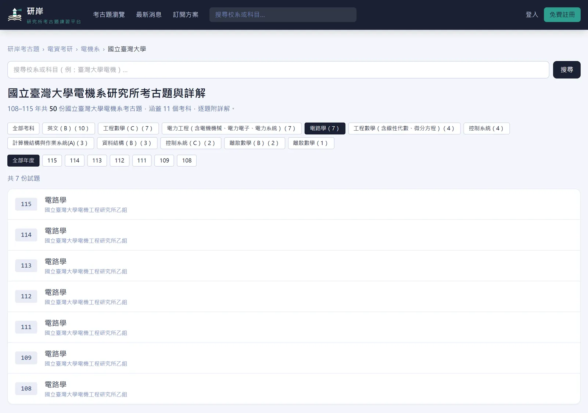
學群、系所、學校，一層一層點進去
首頁先選學群，再選系所類別與學校。校系頁上方的考科與年度按鈕可以一鍵篩選，再按一次就取消。寫過的考卷在列表上會有藍點，下次回來一眼就知道練到哪。
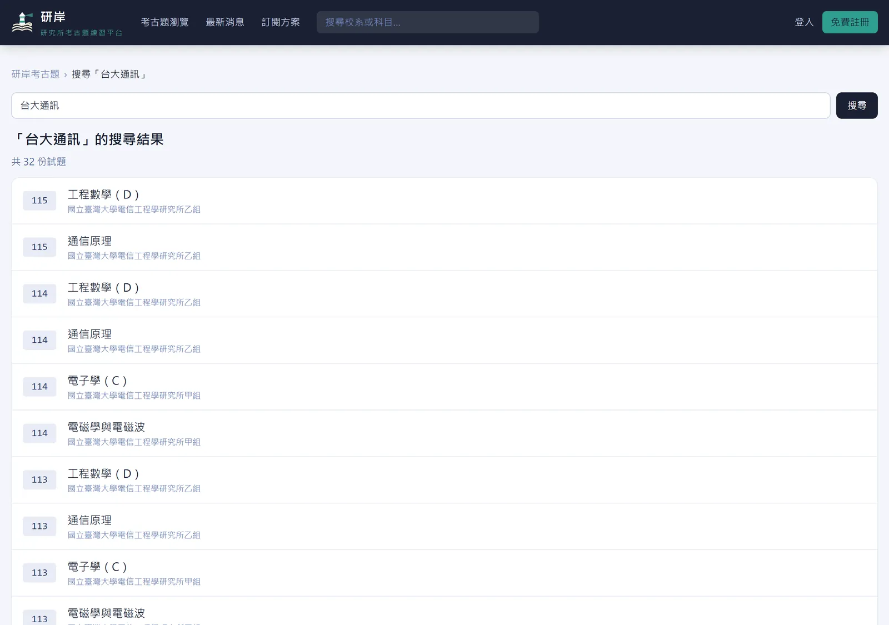
打縮寫也找得到
搜尋框輸入「台大通訊」「113 成大化工」就能直接找到考卷。
搜尋小技巧
- 台大、臺大都查得到，校名縮寫如成大、政大、台聯大也認得。
- 資工、化工、企管等系所簡稱可以直接打。
- 多個關鍵字不用空格，還能加上年度，例如「113 台大 統計學」。
- 通訊、通信、電信會互相找到；全部符合的沒有時，會列出部分符合的結果。
先寫，再看詳解
整份考卷在同一頁，上方的題號列可以一鍵跳題，每題標示配分。 在「我的作答」寫下思路，儲存後換裝置、隔天回來都還在。 詳解預設收起來，不會不小心先看到答案。
怎麼用
- 在題目下方的 我的作答 寫下思路，按 儲存作答與思路。
- 寫完按 顯示詳解 對照。
- 題號列上綠色的是寫過的題目，還沒寫的保持白色。
- 網址後面加上 ?q=題號 會直接跳到那一題，傳給同學或自己都方便。
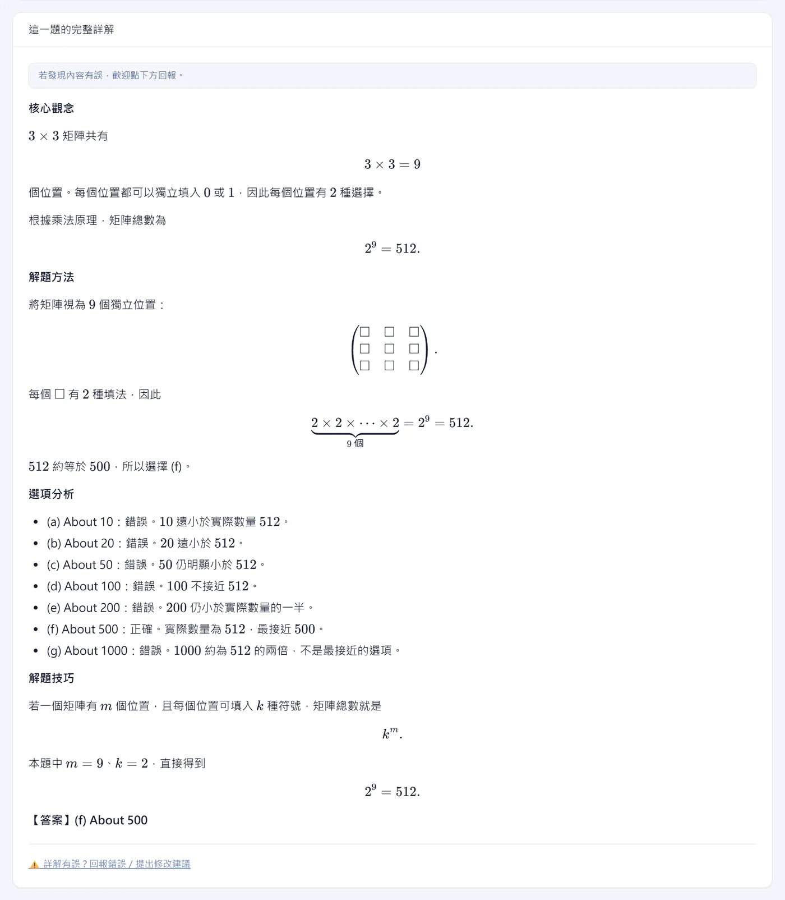
每一題都有完整詳解
詳解照「核心觀念、解題方法、選項分析、解題技巧、答案」的順序寫。 選擇題會把每個選項為什麼對、為什麼錯都講清楚，不是只丟一個答案。 矩陣、積分、化學式都完整排版，手機上也看得清楚。
發現有誤怎麼辦
- 詳解下方按 詳解有誤？回報錯誤／提出修改建議，寫下哪裡有問題。
- 站方處理後，回覆會出現在 我的帳戶 的「我的回報與提問」。
盲點診斷：找出你卡在哪一步
詳解告訴你這題怎麼解，盲點診斷告訴你「你」為什麼解不出來。 把作答打字送出，或拍下手寫的計算過程上傳，系統會對照標準解法，指出卡住的步驟、缺的觀念，還有下次怎麼自己檢查。 方法跟詳解不同但推導正確，一樣判定正確。
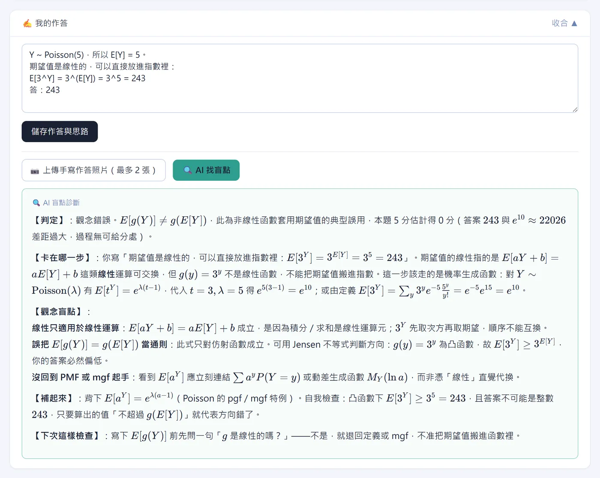
上圖是一份示範作答：把 E[3Y] 直接寫成 3E[Y]，診斷指出錯在「把期望值搬進非線性函數」，並說明該用機率生成函數得到 e10。 操作方式：在 我的作答 寫下過程，或按 上傳手寫作答照片（最多 2 張），再按 AI 找盲點。 照片只用於這一次診斷，不會保存在伺服器；診斷結果會留在該題，下次回來還看得到。
整塊觀念複習，還能跟大家討論
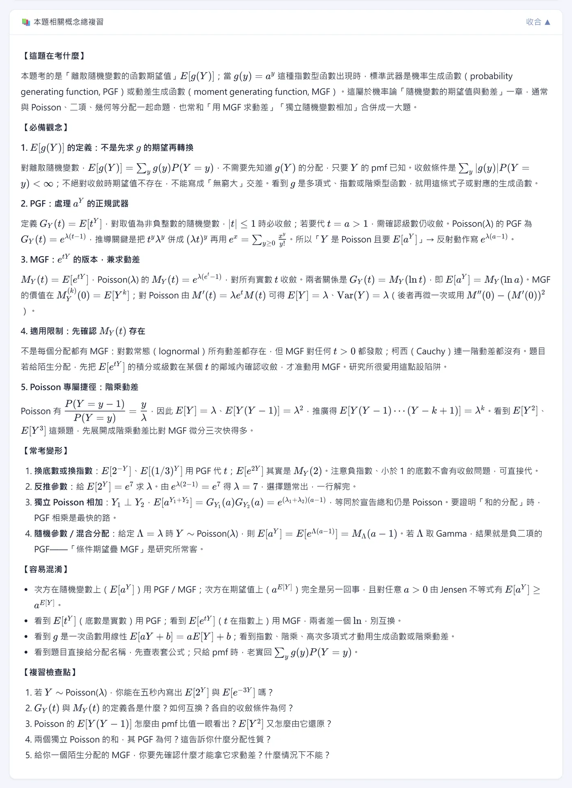
本題相關概念總複習
把這一題背後的整塊觀念整理成考前複習：這題在考什麼、必懂的觀念、常考的變形、容易混淆的地方，最後附上幾個自我檢查的問題。在題目下方展開 本題相關概念總複習 就能看。
討論區與舉手發問
每一題下方都有討論區，可以分享自己的解法、討論詳解的疑問。想直接問站方就用 舉手發問，回覆會出現在「我的帳戶」。
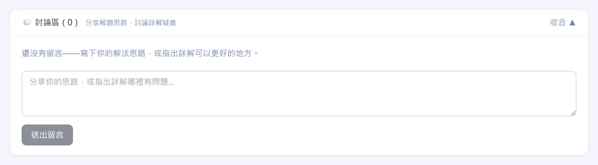
題組與附圖，照原卷排好
閱讀測驗、實驗數據這類多題共用一段文章的題組，共用題幹會集中放在第一題前面，後面幾題直接接著作答。 有圖表的題目會附上原卷對應的頁面，登入後也能展開整份原卷 PDF 對照，不必另外翻檔案。
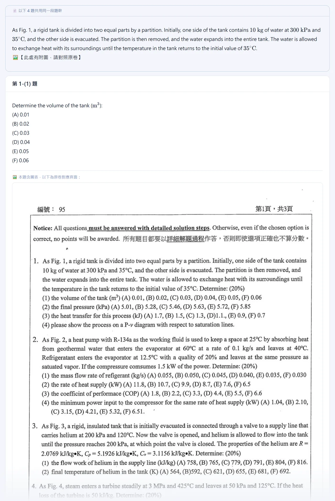
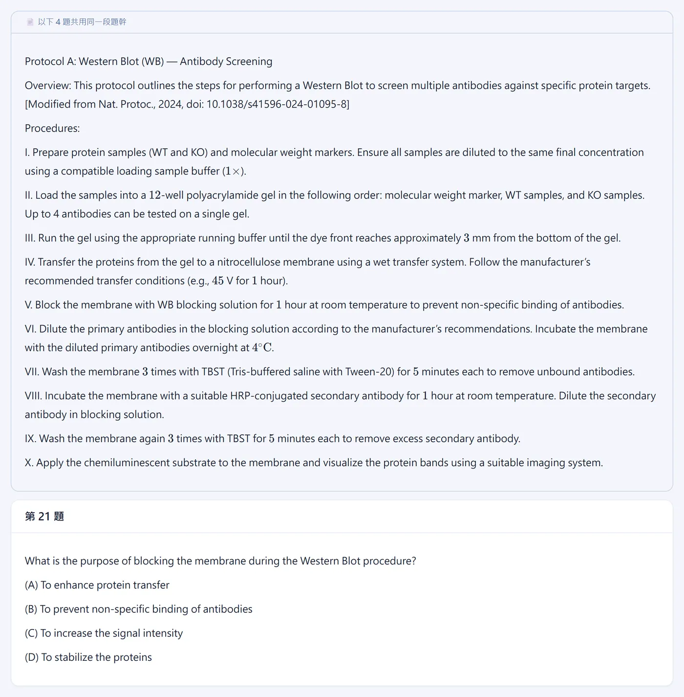
四種顯示模式，久讀不累
頁面最下方的「顯示模式」一鍵切換，不用登入，選一次就會記住。
深色深藍底，晚上刷題不刺眼。
護眼米黃底，長時間閱讀比較舒服。
高對比純白底、加深文字與框線，視力不好或在戶外強光下也看得清楚。
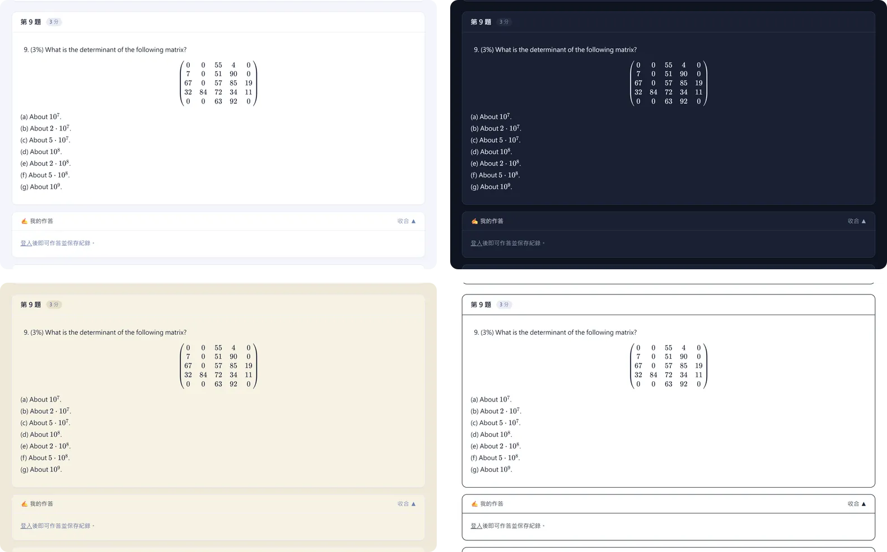
手機、平板都順手，零碎時間也能刷一題
版面會跟著螢幕調整：題號列自動換行、長算式可以左右滑、上傳照片直接開相機，直拿橫拿都能用。 通勤、排隊、午休的空檔，打開就能接著練。
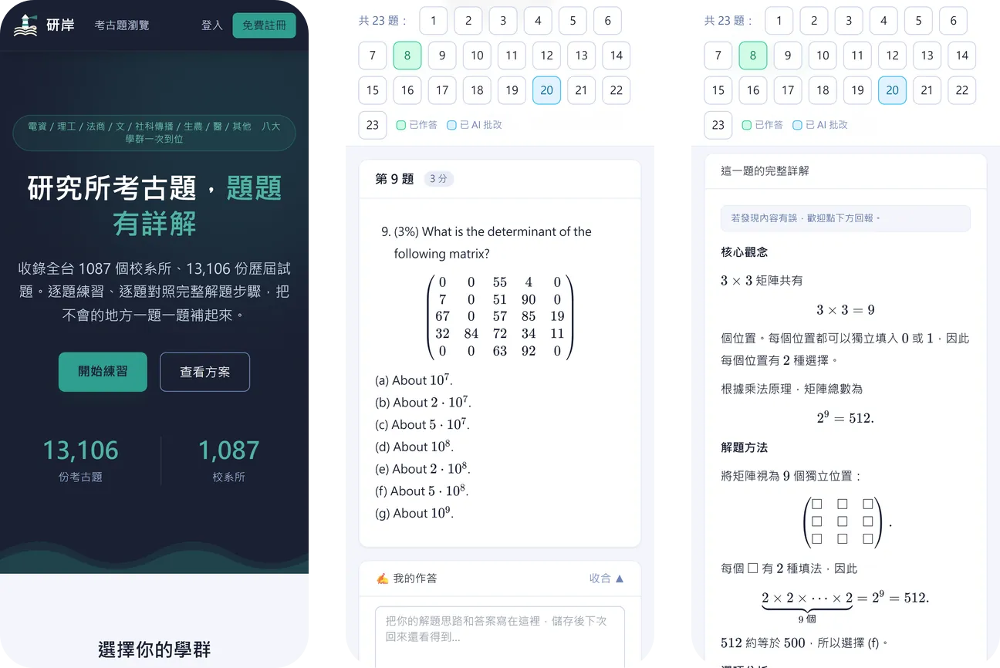
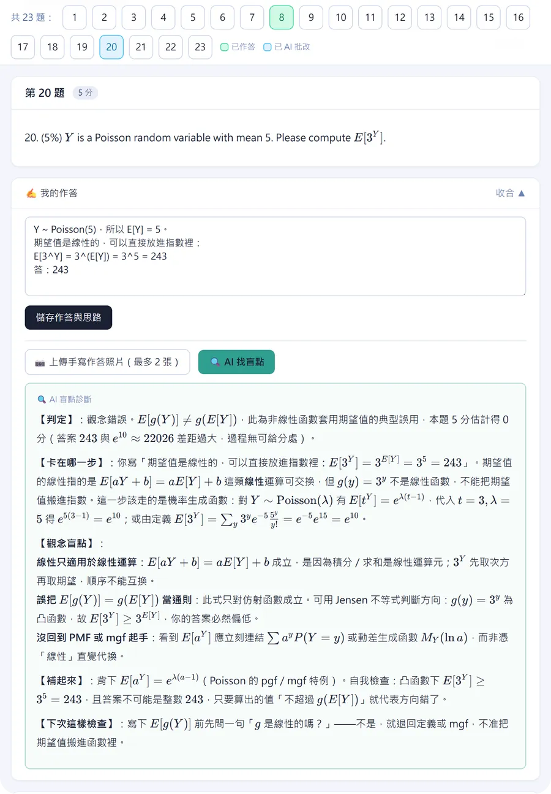
零碎時間這樣用
一次一題題號列直接跳到還沒寫的題目，五分鐘也有進度。
先寫再看在手機寫下思路，晚上用電腦再對照詳解，作答紀錄跟著帳號走。
把題目傳給自己複製帶 ?q=題號 的網址，換裝置直接打開同一題。
換個顯示模式晚上切深色，戶外切高對比。
安裝到主畫面
- iPhone、iPad：Safari 點 分享，選 加入主畫面。
- Android 或電腦：瀏覽器選單選 安裝應用程式 或 加到主畫面；登入後「我的帳戶」頁也有安裝按鈕。
- 之後從主畫面點圖示，就像 App 一樣直接開啟。
使用方法
登入只要 Google 或 LINE 一鍵完成，不用另外設定密碼。
找考卷
首頁選學群，或在搜尋框打「台大電機」「113 成大化工」。
逐題作答
在每題下方的「我的作答」寫下思路，按「儲存作答與思路」。
對照詳解
按「顯示詳解」，看核心觀念、推導與答案。
找出盲點
卡住就按「AI 找盲點」，或展開「本題相關概念總複習」整塊複習。
討論或發問
在討論區分享解法，或用「舉手發問」直接問站方。
收錄範圍：八大學群，108 到 115 學年
涵蓋台大、清大、交大、成大、政大等 26 所國立大學的研究所入學考試。
熱門校系考古題
直接點進校系頁，所有年度與考科的考卷都在同一頁。